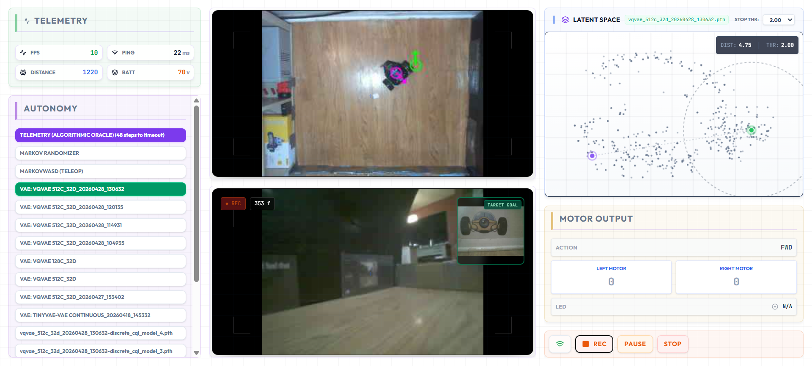

The Mission

The Challenge: Liberating Intelligence
We are witnessing a Cambrian explosion in Artificial Intelligence. In the digital realm—where data is
infinite and compute is centralized—AI has achieved feats previously thought impossible. Yet, these
vast synthetic minds remain confined to server farms and chat windows.
The challenge of our time is not just building intelligence, but liberating it. We must give these
minds a body.
However, the path to embodied AI is currently blocked by a hardware paradox. The industry trend is to
cram expensive, compromised computers onto battery-powered robots. This approach hits a ceiling: it
limits the size of the models we can run, drives the cost of robots beyond the reach of individuals,
and restricts access to well-funded research labs.
This scarcity creates a data vacuum. Without affordable, capable bodies in the real world, we cannot
generate the data required to spark an intelligence explosion in the physical realm.
Our Approach: Disaggregated Intelligence
At Embrained, we solve this bottleneck through Disaggregated Intelligence.
We decouple the robot’s "brain" from its "body." By wirelessly tethering the robot to your powerful
gaming PC or workstation via the Embrained app, we unlock professional-grade capabilities - such as
navigation models and vision-language-action models - that standalone devices simply cannot handle.
The Head (Plexus): Our sensor hub is designed to retrofit the most ubiquitous, low-cost chassis in
the world.
The Result: We serve the "Prosumer & Research" market—enthusiasts, students, and engineers—providing
access to state-of-the-art embodied agents without the five-figure price tag.
Privacy-Native Architecture
We are building a future of home robotics. Share your math, not your video.
Our architecture utilizes local hashing to process spatial data into abstract vectors. Raw video
never leaves your computer. By pooling this anonymized "math," we are creating new classes of
foundation models.
We combine autonomous exploration data with user-controlled demonstrations of advanced
behaviors—such as play, thigmotaxis (wall-following), patrol, and hide—to train a general
intelligence of physical movement.
Compliance & Trust: We believe an active agent must be transparent. All Embrained hardware features a
hardware-level "Tally Light" (Purple LED) that physically indicates when the agent is performing
inference. This ensures you always know when the robot is "thinking," guaranteeing future-proof
compliance with emerging anti-surveillance regulations.
Hardware

+

PLEXUS (the Head) + CHASSIS (the Body)
Plexus is a sensor and communications hub that integrates vision, audio, and safety
reflexes into a single unit. It is designed to retrofit ubiquitous robot bodies - like
our standardized 2WD DIY chassis - ensuring that research-grade agents remain affordable
and repairable.
CARTESO (the Eye)
A low-cost, stationary sensory module that connects via USB. It
serves as a distinct, accessible entry point, allowing users to experiment with embodied
AI and the Embrained app without the need for a mobile chassis.
The Embrained Software Platform

The Operating System for Embodied Intelligence
The Embrained app is a Python-based desktop application that acts as the "Central Nervous System" for
your embodied agents.
By running locally on your PC, it bypasses the compute limitations of microcontrollers, allowing you
to train and deploy
architectures ranging from VAEs and deep Q-learning networks to general navigation models and
massive vision-language-action models.
CORE CAPABILITIES
| Multi-Somatic Support |
One brain, many bodies. The app natively supports Embrained's
Plexus
and Carteso devices, as well as BackyardBrain's
SpikerBot. No
hardware?
Launch with the --simulation flag to train in PyBullet.
|
| Hindsight Experience Replay (HER) |
Don't just log data; learn from it. The app automatically relabels exploratory
"failures"
as successful trajectories to arbitrary goals, maximizing data efficiency. |
| Latent Manifold Visualization |
See what the robot thinks. Watch the multi-dimensional latent state of your agent
navigate the manifold in real-time, visualizing subjective recall alongside live
input. |
| Privacy-Native |
Share your math, not your video. Raw imagery is processed locally
into abstract latent vectors before training. Your home environment stays on your
machine. |
TECHNICAL STACK
Built for enthusiasts, researchers, students and developers. The software platform features a
high-performance FastAPI
backend
coupled with a reactive React/Node.js frontend.
Research & Roadmap
We are building in public. Our goal is to gamify the "black box" of embodied AI, turning abstract
concepts like topological navigation into playable interactions. Here is what we are developing
next:
THE FLOOR IS LAVA (Cost Injection)
Concept: How do you teach a robot to avoid a hallway? You don't write
code;
you "paint" the floor red in the app's dedicated workspace.
The Science: This visualizes Pathfinding on a Weighted Graph.
By injecting
infinite "cost" into specific nodes, the robot naturally reroutes—just like a biological
agent.
INVISIBLE FENCE (Edge Cutting)
Concept: Draw a line across a doorway, and the robot refuses to cross
it,
even if you call it.
The Science: This demonstrates Edge Deletion. To the robot's
topological
brain, the connection between rooms literally ceases to exist.
Follow our development journey on X and
LinkedIn as we build these
features.
Team
Est. 2026. Embrained, LLC is a neurorobotics company dedicated to democratizing
access to embodied AI.

Dr. Christopher Harris
FOUNDER & CEO
Dr. Christopher Harris is a neuroscientist (PhD, Sussex) and neuroroboticist. For eight
years, he served as a Principal Investigator at Backyard Brains, where he created the
SpikerBot platform to help students learn neuroscience by building spiking neural
circuits.
In 2026, he founded Embrained to make embodied AI accessible to everyone. His work
pioneers the decoupling of the robot's brain from its body, transforming commodity
hardware into research-grade instruments capable of collecting massive, high-quality
datasets. He designs architectures that allow standard PCs to drive complex agents and
games that reveal the inner workings of AI, making the invisible logic of neural
networks visible and controllable. His long-term aim is to discover which biological
primitives are essential for general intelligence, liveliness, and consciousness, and to
integrate them into the Embrained ecosystem to make them accessible to everyone.
Watch:
Emergence in Educational Neurorobotics
Dr. John Griffiths
CSO & SPECIAL
ADVISOR
Head of the Whole Brain Modelling Group at the Krembil Centre for Neuroinformatics. His
research bridges the gap between computational models and biological reality through
high-resolution neural dynamics.
Watch:
Whole Brain Modelling
Contact